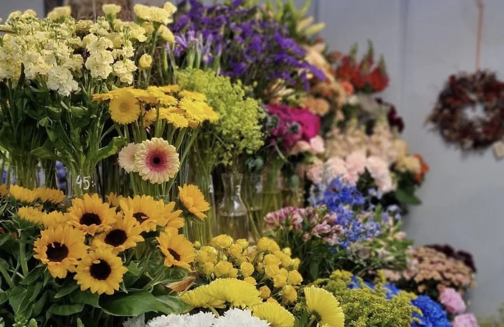

Startsida
En välkomnande startsida med en stämningsfull bild och tydlig information om företaget.
En responsiv webbplats för en blomsterbutik som skapades i grupp. Projektet kombinerar design, funktionalitet och kreativitet för att skapa en användarvänlig och inspirerande upplevelse.

En välkomnande startsida med en stämningsfull bild och tydlig information om företaget.

En tydlig produktsida med bilder, priser och olika alternativ för blomsterarrangemang.

En enkel och tydlig beställningssida som gör det lätt för användaren att lägga en beställning.
Iris Blommor är en responsiv webbplats som skapades i grupp under kursen HTML och CSS. Idén var att skapa en blomsterbutik med fokus på en vacker design, tydlig struktur och en trevlig användarupplevelse. Projektet innehåller flera undersidor, en beställningssida och en enhetlig visuell identitet med logotyp, färger och bilder som passar målgruppen.
Skapa en inspirerande webbplats för en blomsterbutik med en personlig och enhetlig design.
Arbeta i grupp och kombinera våra kunskaper för att skapa en fungerande helhet.
Ge användaren en enkel och trevlig upplevelse med tydlig navigering och responsiv design.
Jag har haft en stor roll i planeringen, designen och utvecklingen av vår webbplats. Jag kom på idén om en blomsterbutik, gjorde skisser och designade logotypen och faviconen.
Jag har ansvarat för HTML och CSS på sidorna för blommor, begravning, födelsedag, bröllop, annat och beställning. Jag har även utvecklat headern, navigationsmenyn, den responsiva hamburgermenyn, animationer och hoppa-till-knappar.
Jag har arbetat med mobilanpassning, automatiskt dark mode och SEO för att göra webbplatsen mer användarvänlig och lättare att hitta via sökmotorer. Dessutom har jag letat upp bilder och länkar till samarbetspartners och sociala medier.
Under grupparbetet har jag tagit initiativ till möten och försökt skapa god kommunikation. Samarbetet har ibland varit utmanande på grund av bristande kommunikation, men jag har försökt ta ansvar och driva arbetet framåt.
Vi har skapat en komplett och fungerande webbplats för en blomsterbutik med flera undersidor, en beställningsfunktion och en enhetlig visuell identitet. Projektet har gett mig värdefull erfarenhet av både teknisk utveckling, designarbete och samarbete i grupp.
Ett kreativt projekt
som kombinerar design,
teknik och samarbete!